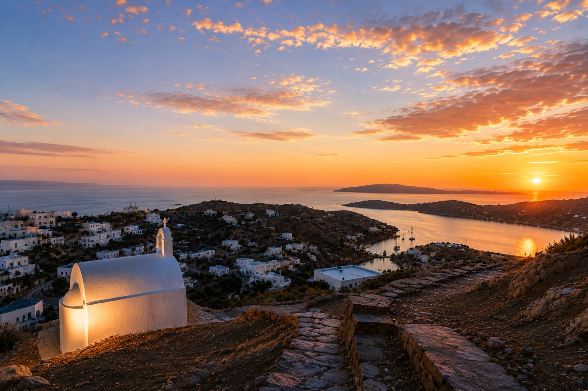
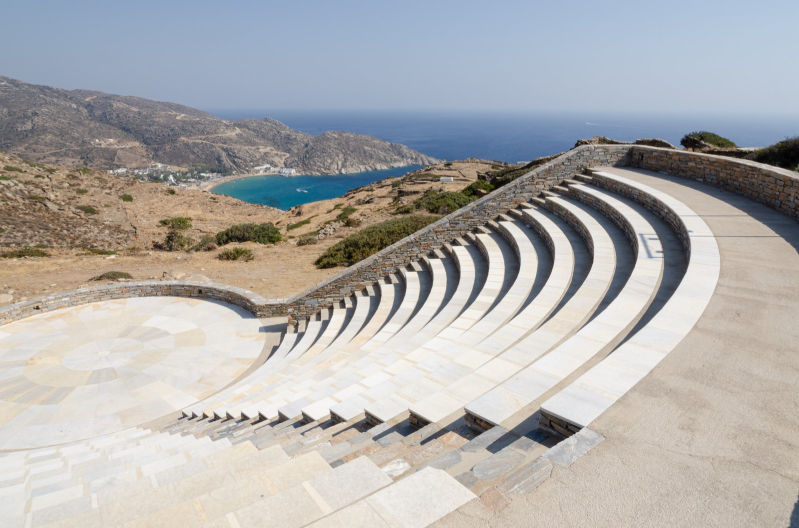
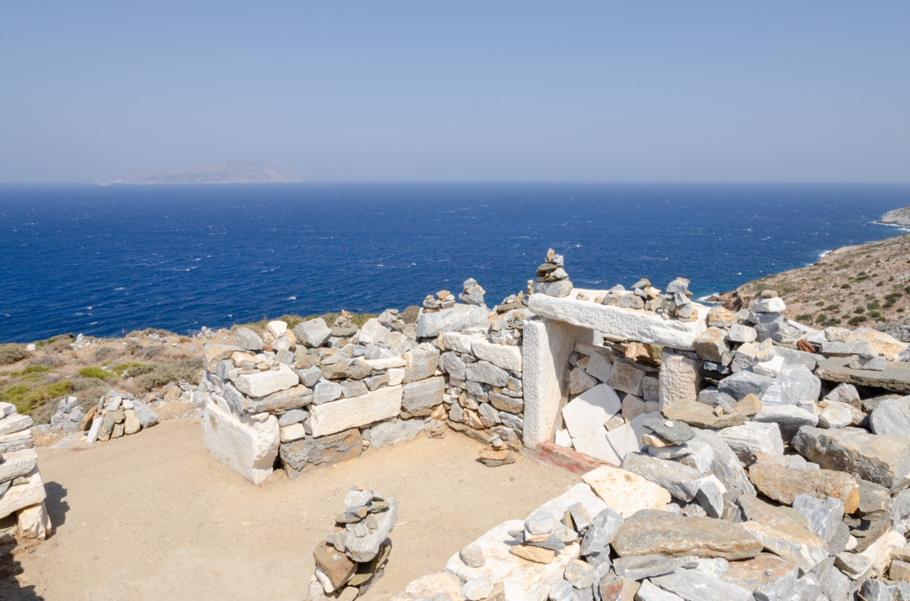
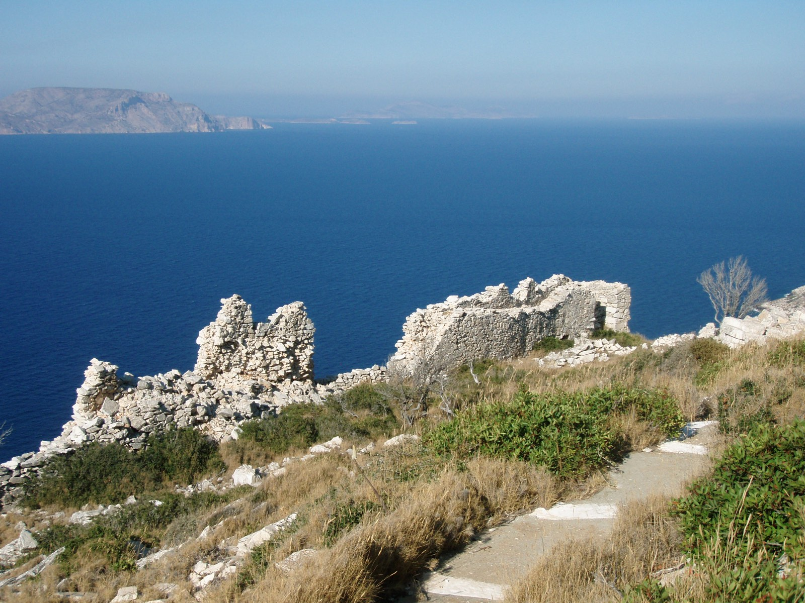
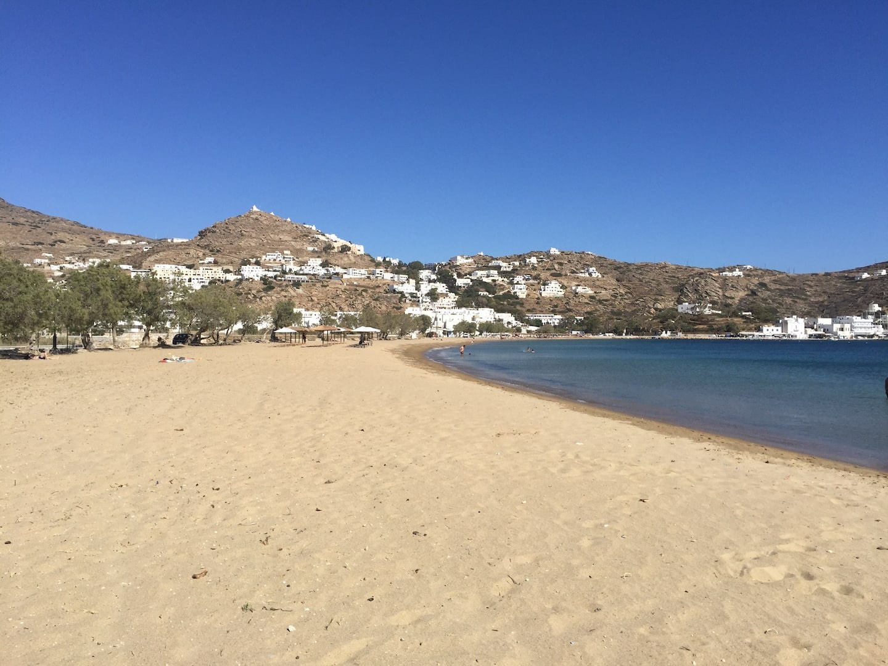
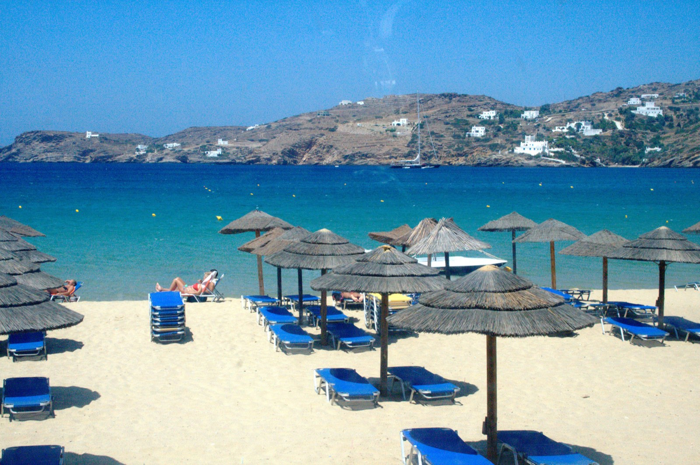
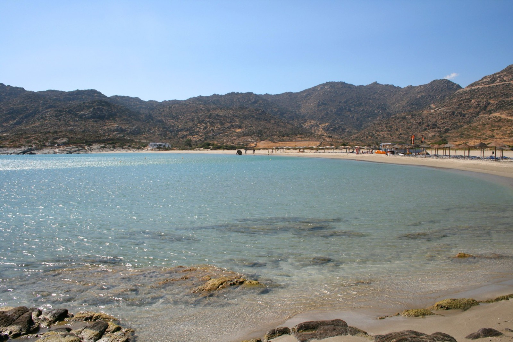
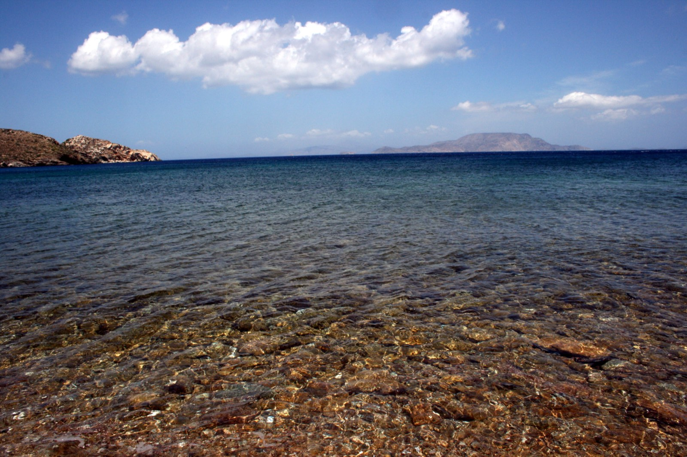
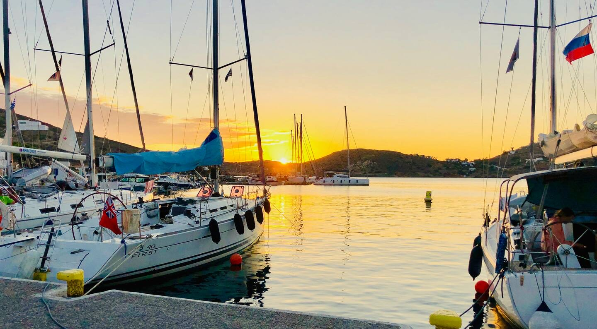

Chora
Le village blanc et ses ruelles, les moulins sur la crête et l'église Panagia Gremiotissa tout en haut. Le meilleur endroit de l'île pour le coucher du soleil.

Notre île, nos adresses
Kampos, c'est « la campagne » : un coteau calme entre le port et la colline de Skarkos, face à Chora.
Depuis la maison, la plage de Yalos est à 5 minutes à pied, le port à une quinzaine de minutes. La colline de Skarkos et son site antique sont à 15 minutes à pied. Chora, le village perché, se rejoint en bus, en taxi ou par le vieux chemin pavé.
Voici les lieux que nous aimons et que nous conseillons à nos voyageurs.
La carte montre le quartier. L'adresse exacte vous est envoyée avec la confirmation de réservation.

Le village blanc et ses ruelles, les moulins sur la crête et l'église Panagia Gremiotissa tout en haut. Le meilleur endroit de l'île pour le coucher du soleil.

Un village de l'âge du Bronze, parmi les plus importants des Cyclades, à 15 minutes à pied de la maison. Ses objets sont exposés au musée archéologique de Chora.

Un amphithéâtre de marbre de style antique, juste derrière les moulins. Il accueille des concerts en été, face à la mer.

Au nord de l'île, au-dessus de Plakotos. La légende dit qu'Homère est mort à Ios. La vue sur la mer vaut à elle seule le trajet.

Les ruines d'un château vénitien à l'est de l'île, entre Agia Theodoti et Psathi, avec une vue spectaculaire.

Les caïques et les filets sur le quai, à quelques minutes de la maison. Le matin, on y achète le poisson qui finira sur la plancha.
L'été, le meltemi souffle du nord. Les jours de grand vent, choisissez une plage abritée au sud.

Notre plage, à 5 minutes à pied. Longue, de sable, peu profonde et aménagée, avec tavernes et beach bars.

La grande baie de l'île, très aménagée, avec sports nautiques et ambiance festive. Desservie souvent par le bus.

Au sud, une série de criques turquoise abritées du meltemi. La plus belle de l'île, selon beaucoup.

À l'ouest, face à Sikinos. Exposée au vent, mais superbe en fin de journée.

Au nord-est, au bout d'une route panoramique. Une grande plage tranquille et des tavernes les pieds dans le sable.

Les plages sauvages de l'est et du sud-est, sans aucun service. Pour une journée hors du temps, avec une voiture et un panier pique-nique.
Les tables, les bars et les boutiques que nous conseillons. La plupart ouvrent de mai à octobre.
Les horaires changent chaque saison : appelez ou réservez avant de vous déplacer, surtout en juillet et en août.
Le projet Ios Paths a restauré des sentiers balisés à travers l'île. Depuis la maison, la boucle Yalos, Skarkos, Chora et retour fait environ 4 km : c'est notre promenade préférée en fin de journée.
Pour les couchers de soleil, montez aux moulins de Chora ou à l'église Panagia Gremiotissa. En été, ne manquez pas une fête de village, le panigiri : musique, danse et repas partagé jusque tard dans la nuit.


Ios est au centre des Cyclades. Les durées sont celles des bateaux rapides. Vérifiez les horaires de la saison avant de partir.
| Île | Traversée | Pourquoi y aller |
|---|---|---|
| Sikinos | 10 à 30 min | La plus proche et la plus authentique, sans foule. |
| Santorin | 35 à 50 min | La caldeira et les villages d'Oia et de Fira. |
| Folegandros | 40 min à 1 h 30 | Une Chora parmi les plus belles des Cyclades, au bord de la falaise. |
| Naxos | 35 à 45 min | La Portara, les villages de montagne et les grandes plages. |
| Paros | environ 1 h | Naoussa, Parikia et leurs ruelles. Plutôt avec une nuit sur place. |
Avions, ferries, bus et taxis : tout ce qu'il faut savoir pour arriver jusqu'à la maison.
Voir les infos pratiques